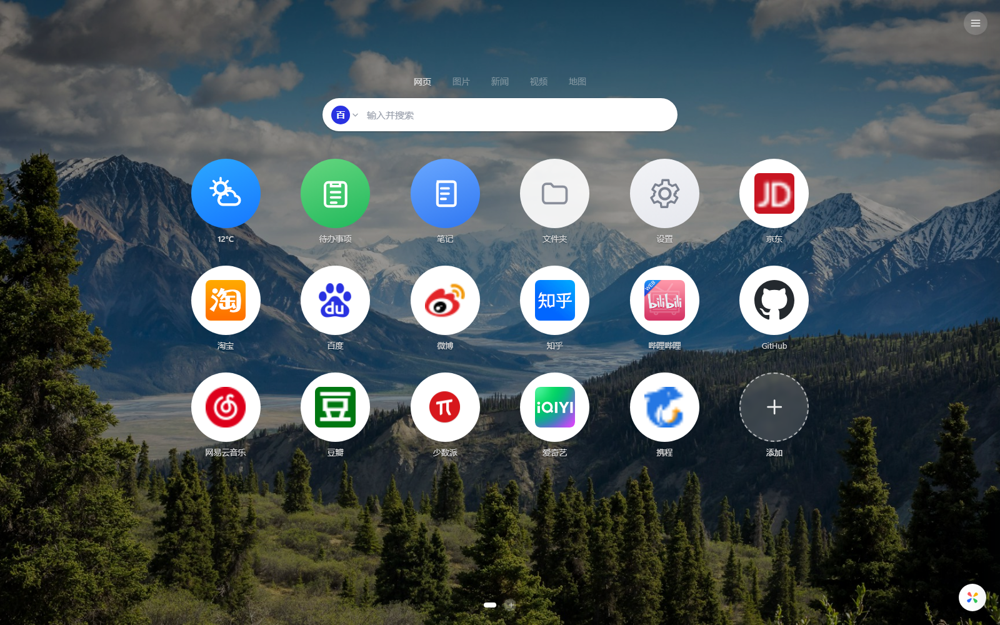
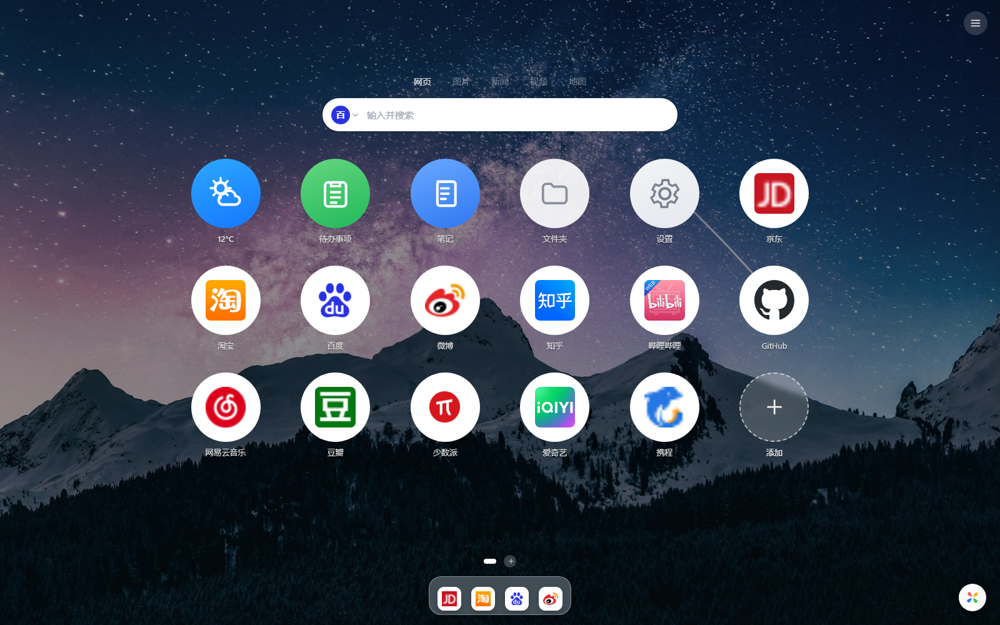
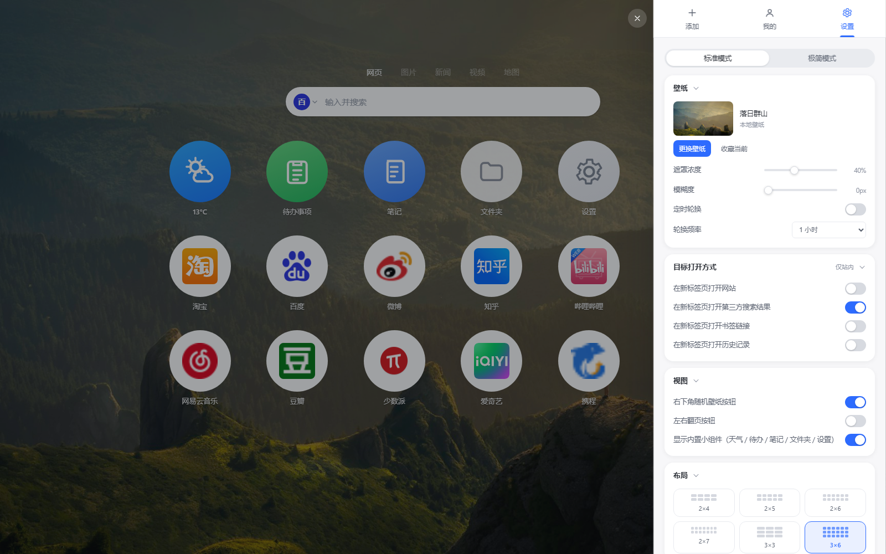
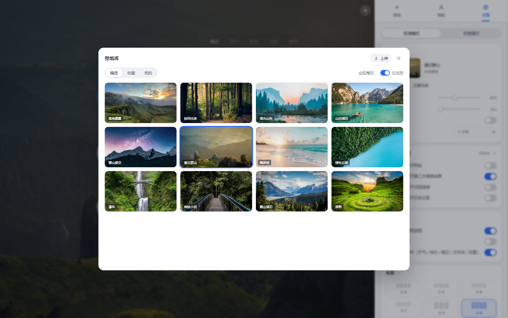

3×6 大圆图标
和原版一致的大尺寸圆形图标，支持 0–50% 圆角、大小、透明度、阴影和启动动画。
3×6 大圆图标、真实网站图标、高清壁纸、macOS 风格 Dock，还有待办、笔记、天气和文件夹。所有数据只留在本机。

按原版 Infinity 的使用习惯重做：右侧面板、3×6 网格、真实图标、壁纸库和 Dock，不需要登录，不收集数据。
和原版一致的大尺寸圆形图标，支持 0–50% 圆角、大小、透明度、阴影和启动动画。
把任意图标拖到底部固定，悬停放大、显示名称，支持排序、拖出移除，设置/笔记等小组件也能放进去。
在线图标源 → Chrome 本地 favicon 缓存 → 首字色块，三级兜底；离线也能显示已访问站点的图标。
内置 1920×1080 摄影壁纸，支持收藏、仅收藏随机、上传压缩、必应每日、下载与定时轮换。
待办条目化、勾选、角标；笔记自动保存；天气支持查询城市，失败静默降级。
图标互拖建组、拖入文件夹、跨页移动；删分页/删文件夹自动把站点迁回，不丢数据。
百度 / Google / 必应 / Yahoo × 五类别，支持添加自定义搜索引擎和搜索建议。
导出/导入 .infinity 文件，单事务导入、结构校验、失败不覆盖；旧版数据自动迁移。
可选权限，首次打开才申请；不授权也不影响其他功能，数据只在本机展示。
首页、Dock、设置面板与壁纸库，全部来自真实运行的扩展截图。



下载 → 解压 → 加载。Chrome 不允许把 zip 直接拖进扩展页，所以需要点一次「加载已解压的扩展程序」。
tab-studio-v2.1.0.zip，解压得到 tab-studio-v2.1.0 文件夹。chrome://extensions，右上角开启「开发者模式」。tab-studio-v2.1.0 文件夹（里面有 manifest.json 的那一层）。选择文件夹时选错了层级。要选解压后直接包含 manifest.json 的那一层（tab-studio-v2.1.0），不是它的上一级。
说明在线图标源和 Chrome 本地 favicon 缓存都没取到。先访问一次该网站，或确认设置里「允许可选联网」开启。加载顺序：favicon.im → DuckDuckGo → Chrome 本地缓存 → 首字。
这两项需要联网，且「设置 → 通用 → 允许可选联网」要开启；失败会静默降级，不影响其他功能。
不会。扩展使用固定 ID 的 IndexedDB/localStorage，替换文件夹后在 chrome://extensions 点刷新即可保留数据；首次从旧版升级会自动迁移。
不支持。扩展依赖 Chrome 的 _favicon、chrome.tabs 与 MV3 行为，目前只适配 Chromium 内核浏览器。
个人学习自用可以，代码可自行修改；内置壁纸来自 Unsplash 免费许可。请勿把 Infinity 原版素材打包进二次分发版本。